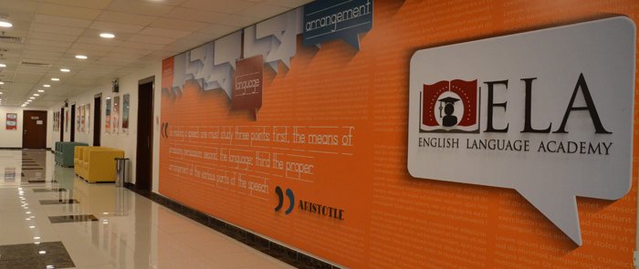
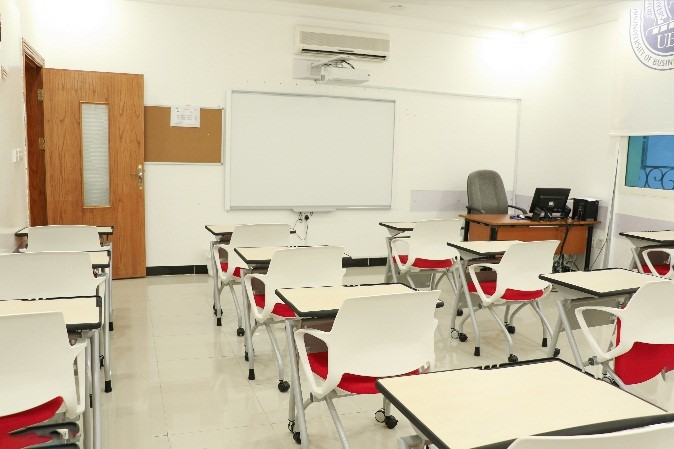

About ELA
UBT’s English Language Academy (ELA) was established to offer students a unique opportunity to learn English. In today’s global job market, being able to speak English is a huge asset. The ELA will not only help students master the English language, but will also equip them with the critical thinking skills and communication skills employers look for.
ELA lessons
ELA lessons focus on a series of highly engaging student-centered activities through National Geographic Life Series (Cengage’s Life 1-6 textbooks series. American edition 2015). Upon admission to UBT, students take the required standardized placement tests to determine their proper English proficiency level. The entire program is delivered in six modules. Each module lasts eight academic weeks at the rate of 25 hours per week, ranging from Beginner (A1) to Advanced (C1) on the CEFR scale with its level descriptors. ELA English Language Program Description UBT’s English Language Academy’s six-level intensive English language course is an integrated-skills and content-based program that develops students’ fluency in American English, as well as the critical thinking skills required for success in the 21st century, ranging from Beginner (A1) to Advanced (C1) on the CEFR scale with its level descriptors. The entire course is delivered in six modules. Each module spans eight academic weeks at the rate of 24 hours per week. The program utilizes Cengage’s LIFE American edition (2015) series’ textbooks which adopt a communicative approach emphasizing language learning in real life contexts, and the production of language in a broad range of speaking and writing situations – thereby mirroring the functional descriptors of the CEFR.
